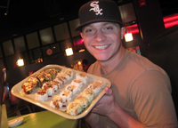
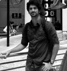
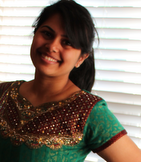
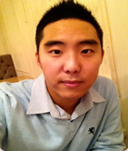

The Design Team
Insert description here (optional)
Matthew Farrell
My name is Matthew Farrell and I am a recent graduate of the Parkland College Graphic Design Program. I have been a freelance designer since 2011 and recently acquired an entry level position at a local advertising and marketing agency. In my free time I enjoy skateboarding, painting, reading, and snowboarding in the winter. I served on the design team with everything from the logo creation to the user-interface design. I hope you enjoy the app and find it useful!
Ian Taylor
Hi! I'm Ian Taylor, junior at UIUC and majoring in Graphic Design! I've made a start up business with friends, freelance, and did design work for my old high school. Design is in everything all around us: a language, it is in everything from a street lamp to the device you are using right now, and to understand this language is a powerful ability. Fun fact: I practice Parkour, the art of movement navigating obstacles. This mindset and training helps my designing, namely solving problems (visual or special) efficiently.
The Development Team
Insert another description here
Yiyang Hu
I am Yiyang, a rising senior at the University of Illinois majoring in Industrial Engineering minoring in Computer Science. I have worked for Deloitte, State Farm and two start-ups before joining this team, and I love the tech industry as well as the people involved in it. Technology for me is about something that can enhance people's lives and make us more closely connected.
Pingxiao Ye
Hey I'm Pingxiao. I am currently a junior in Electrical Engineering minoring in Computer Science at the University of Illinois. An interesting fact about me is that I actually found out about it through Facebook by Henry. After joining the team, I worked primarily on this app's interface, and have enjoyed working with everyone on the team.
The Business Team
Insert Businesss Team description here
Eileen Waltz
My name is Eileen Walz. I'm a graduate student in the college of Library and Information Science with a Bachelors in Civil Engineering. My broad range of interests have led me to research the benefits of international service projects, create a community based internship program, teach a course on creative thinking, and develop information resources for the University of Illinois. I am constantly exploring new opportunities, new perspectives, and new environments. In the future I hope to nurture this same adventurous spirit in others.
Joshua Heng - Development
I am currently a Junior in Computer Science at the University of Illinois. I have a huge interest in mobile and web development. I like to develop apps to make our lives more efficient. I have developed 3 android apps with my friends in my spare time. So far, we have developed a CUMTD bus app, an app which helps users who have lost their phones to retrieve their friend's contact in an efficient manner and a bar app which tracks the line outside bars or clubs using crowdsourcing info which is still in the works. I like to learn new methods, languages and frameworks which I can up my game in mobile and web development and be a better brogrammer. GTL
Neha Shafizadah - Business, Development
Hi! My name is Neha Shafizadah, Senior in Electrical Engineering at the University of Illinois, Urbana Champaign, and I will be graduating in December 2013 (Yay!). I was born in Pune, India but grew up in Lagos, Nigeria.I look forward to beginning a new career in business and technical consulting and want to pursue an MBA in the near future. I am always exploring new opportunities of getting involved in projects and in learning more things; this can be anywhere from new coding languages to exploring new cities and cultures. 2 fun facts about me, I am familiar with 5 different languages: English, French, Hindi, Sindhi and Farsi (Persian) and I used to play basketball for my highschool team.
J.C. Morgan - Business
I have provided project management and customer relations, primarily in the publishing sector, for several years. Through my interest in digital publishing, I now also provide social media content creation and communications services. The Kickstart Kindergarten project provided an opportunity for me to expand these skills and gain knowledge about app development. Beyond work, I enjoy my children and family, sports, and my hobby of raising show rabbits.My older son and I have shown our rabbits in numerous states and I look forward to sharing this hobby with my younger children soon.
Anirud Yadav - Developer
"I am, Anirud Yadav, an incoming junior in computer engineering at University of Illinois. Intrigued by the field of database and artificial intelligence, I wish to explore my interest in these promising fields. I have a fair grasp of languages like C, C++, JavaScript and CSS. Apart from academics, I like to spend my time on leadership activities (student body senator for academic year 2013-14) and sports, tennis particularly. I am a fun loving person and like to work in teams to make the most out of the learning experience."
Justin Klett - Design
Greetings and salutations, all! My name is Justin and I am a graphic design student at Parkland College. I have been studying there for about 4 years, working at my own pace. This project with the United Way Pre-K app is the first large scale project I have been a part of. On this project, I helped to design the UI and I will be working on some of the advertising design. Past projects include t-shirts for plays I have been involved with and graphic design work for some local Indie Film projects. In fact, I actually have my own IMDB page because I was named Art Director for the short film called The Window Into Time.
Vaidehi Sishtla - Development
Hello! My name is Vaidehi Sishtla, Senior in Computer Science at University of Illinois, Urbana-Champaign. I was born in India but I grew up in Bloomington, IL. The funny thing about my college career is that even though I came as a Freshmen with no knowledge in programming, I will be leaving with respect for the field and experience. I am open to all kinds of projects because I believe each project will you something books cannot and that is experience. Because of that, I am thankful to be part of this project. I learned leadership and time management skills. A fun fact about me is that as a kid, I always wanted to be famous so something people do not know about me is that I was in a South Indian advertisement!
Jae Yun Song - Development
I am currently a senior in University of Illinois, Urbana Champaign majoring in computer science. I am interested in computer security related areas and looking forward to studying them in the future. One of the reason I got interested in computer security was that I was so paranoid about being hacked, whenever I put down my personal information into the computer. Constantly being afraid of getting my identity stolen, I have decided to study computer security in order to participate in creating a safer environment for computer users including myself.

Suk Hun Lee - Development
I am a Senior computer science student from South Korea(age of 24) at UIUC. I served 22 months of Army service as KATUSA(Korean Augmentation to the United States of Army) assisting United States Forces in South Korea. I like playing a ball game like baseball, soccer, basketball. I have used C,C++,Java to program and interested in computer security and web development.
Hyunsuk Kim - Development
Hi! My name is Hyunsuk Kim but I go by Antonio. I am originally from Korea so I can speak two language fluently. I am currently attending University of Illinois at Urbana Champaign and studying computer science. I am the active member of Engineering Fraternity(Sigma Phi Delta). I love playing basketball in my free time. I have a positive attitude and bring positive energy to people around me. I am really easy to get along with.
Matt Farrell - Design
I am an all around freelance graphic designer with skills in web design, print, illustration, motion design, and branding/identity. I specialize in the logo/branding/identity aspects of graphic design, and I am approached for this sort of work most often. Creative Conceptual tTypography applied to logos is my favorite area of work. I am a recent grad of Parkland College in Graphic Design. Here is my website for more information: http://matthewcreative.com/
Ian Taylor - Design
Hi! I'm Ian Taylor, junior at UIUC and majoring in Graphic Design! I've made a start up business with friends, freelance, and did design work for my old high school. Design is in everything all around us: a language, it is in everything from a street lamp to the device you are using right now, and to understand this language is a powerful ability. Fun fact: I practice Parkour, the art of movement navigating obstacles. This mindset and training helps my designing, namely solving problems (visual or special) efficiently.
Henry Lin - Development
"Hi! My name is Henry Lin. I'm currently a Junior at the University of Illinois at Urbana-Champaign, pursuing a dual degree in Mathematics and Computer Science. I'm interested in Distributed Systems, Data Mining, Text Information Systems, Topology, Computer Vision, and Algorithm Design. This semester, I will be an instructor for one of the university's introductory engineering courses, ENG 100. I will also be acting as a teaching assistant for one of the introductory theory courses for computer science, CS 173. Outside of my academic work, I enjoy playing piano, watching tv, folding origami, and, as of late, learning how to sing."
Paul Kim - Development
I'm Paul, and I'm both fascinated and a bit afraid of how fast technology is changing today, in front of my own eyes! I hope I get to see the day when I'll be able to create an artificial intelligence that will code for me (effectively outsourcing myself...). It's a good thing I'm studying computer science! Something you should know about me is that I have a fear of squids, and anything with tentacles!